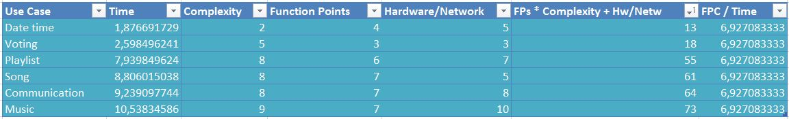

1. What are function points?
Function points are units of measurement to calculate and express the amount of work needed for a task / use case / project. Using function points you can make estimates for your project and improve your planning. The amount of work needed for one unit is calculated from past projects which have been completed.2. Our Calculation
Since we've done our 2 future Use Cases and we need 5 in total, we present your the next three "amazing" working projects.
The image below shows the calculation of function points per time using the time needed fot those old use cases:

This image shows the calculation of the next 5 new use cases:
We have 2 kinds of function points:
- These are the sub tasks we have created in jira and they are written in excel behind "Complexity" (img above).
- These are calculated FPs which are used in graphics to calculate future use case time.
3. Graphic of FP vs. hours
Only old use cases:
Same graph with function points for future use cases:
4. Outliers
Below you can see our burndwon chart. If you look closely, you can see we've changed the 'FPC/Time constant' due to the actual amount of time we have used to coplete the tasks. We tried to to set an procentual buffer to the estimated time for creating the UMLs, Use Case files etc.. This inaccurate Burndown chart looked like this:
Since we connected jira to eclipse and recorded the exact time, we've corrected the formula to calculate future use case time. Our failures will lead us to future glory!
5. Successfull Sprints
Below, you can see the burndown chart of our successfull sprint 4.
Period: 06/May/15 3:39 PM - 13/May/15 3:39 PM
Estimated time: 17h / 2d 1h